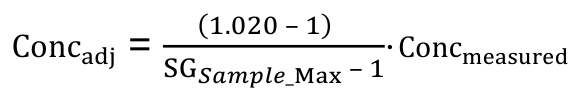
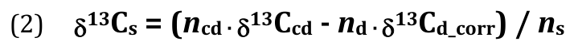

Technical Documents · TD2019IRMS
Edition v1.0, 2019 (version 1.0) · effective 1 March 2019 · superseded
Retrieved on 25 November 2026 from https://www.wada-ama.org/sites/default/files/td2019irms_final_eng_clean.pdf
Editions: v1.0, 2027 (current) · v1.0, 2022 · v2.0, 2021 · v1.0, 2021 · v1.0, 2019 · v1.0, 2016 · v1.0, 2014
p. 1
Detection of Synthetic Forms of Endogenous Anabolic Androgenic Steroids by GC/C/IRMS
1.0 Introduction
This Technical Document describes the Analytical Method to detect the presence of synthetic forms of Endogenous Anabolic Androgenic Steroids (EAAS) by Gas Chromatography / Combustion / Isotope Ratio Mass Spectrometry (GC/C/IRMS) in urine Samples.
Consideration is also given to boldenone, boldenone Metabolite(s) and formestane¹ , which may be found naturally in urine Samples at low concentrations.
- 19-Norandrosterone (19-NA) and 19-noretiocholanolone (19-NE) are considered in a separate Technical Document, TD19NA [1], and the technical recommendations and requirements described herein shall not be applied to their analysis.
1.1 Application of GC/C/IRMS
1.1.1 GC/C/IRMS analysis as a Confirmation Procedure for the exogenous administration of EAAS
GC/C/IRMS analysis shall be conducted as a Confirmation Procedure when the Laboratory receives an "Atypical Passport Finding (ATPF) Confirmation Procedure Request (ATPF-CPR)" or a "Suspicious Steroid Profile (SSP) Confirmation Procedure Request (SSP-CPR)" notification through ADAMS, as described in the Technical Document on the Measurement and Reporting of EAAS (TDEAAS) [2].
In addition, even if the Markers of the "steroid profile" are within the normal ranges, the Testing Authority, the Athlete Passport Management Unit (APMU), or WADA may request GC/C/IRMS analysis to be performed on any urine Sample.
¹Formestane (4-hydroxyandrost-4-en-3,17-dione) is an aromatase inhibitor but its structure is similar to EAAS and it may also be found naturally in urine Samples; therefore, it requires an Analytical Testing approach similar to that described in the TDEAAS [2].
p. 2
Furthermore, the Laboratory may at any time advise² the Testing Authority to perform (or not) the GC/C/IRMS analysis based upon its expertise, for example in the presence of any other Marker(s) of administration of EAAS such as 6α-hydroxy-androstenedione, 3α,5-cyclo-5α-androstan-6β-ol-17-one, 6β-hydroxy-androsterone or 6β-hydroxy-epiandrosterone (sulfates), or an altered ratio of 7β-hydroxy-dehydroepiandrosterone to 16α-hydroxyandrosterone (sulfates).
1.1.2 GC/C/IRMS analysis for formestane, boldenone or boldenone Metabolite(s)
In Samples containing formestane, boldenone or boldenone Metabolite(s), the GC/C/IRMS analysis for these compounds shall be conducted before reporting an Adverse Analytical Finding when their estimated specific gravity (SG)- adjusted³ concentrations are determined as follows:
- Concentration of formestane between 50 ng/mL and 150 ng/mL.
[Findings for formestane below 50 ng/mL (SG-adjusted³ , if needed) should be reported as a Negative Finding, unless the result of the GC/C/IRMS analysis, if performed (depending on Laboratory's analytical capacity and following consultation with the Testing Authority), conclusively establishes the exogenous origin of the substance (Adverse Analytical Finding).
Findings for formestane above 150 ng/mL (SG-adjusted³ , if needed) shall be reported as Adverse Analytical Findings].
²Or as covered by agreement between the Laboratory and the Testing Authority.
³When the measured SG of the urine Sample (SGSample) is greater than 1.018, the concentrations (free and hydrolyzed glucuroconjugated steroids) shall be adjusted according to the formula:

[[Refer to the effective TD DL for instructions on calculating SGSample_Max].
p. 3
- Concentration of boldenone and/or its Metabolite(s) between 5 ng/mL and 30 ng/mL.
[Findings for boldenone and/or its Metabolite(s) at concentrations estimated below 5 ng/mL (SG-adjusted³ , if needed) should be reported as Atypical Findings, unless the results of the GC/C/IRMS analysis, if performed (depending on Laboratory's analytical capacity and following consultation with the Testing Authority), conclusively establish the exogenous origin of the substance (Adverse Analytical Finding).
Findings for boldenone and/or its Metabolite(s) above 30 ng/mL should be reported as Adverse Analytical Findings without the need for GC/C/IRMS analysis, unless it is determined that the Sample is substantially degraded due to a high level of microbial contamination (in which case the Sample shall be reported as an Atypical Finding)].
Laboratories that do not have the analytical capacity to perform GC/C/IRMS analysis for formestane, boldenone or its Metabolite(s) shall have the Sample analyzed by another Laboratory that has such analytical capability.
1.1.3 "B" Sample Confirmation Procedure
When an Adverse Analytical Finding is reported based on the results of a GC/C/IRMS analysis performed on the "A" Sample, only the GC/C/IRMS analysis shall be repeated during the "B" Sample Confirmation Procedure, if applicable.
p. 4
2.0 GC/C/IRMS analysis
The application of GC/C/IRMS is based on the following:
- The determination of the δ¹³C value of the Target Compound(s) (TCs), i.e. the Marker(s) of the urinary "steroid profile" [e.g. androsterone (A), etiocholanolone (Etio), 5α-androstane-3α,17β-diol (5αAdiol), 5βandrostane-3α,17β-diol (5βAdiol), testosterone (T), epitestosterone (E)], as well as other target Analytes (e.g. boldenone, boldenone Metabolite(s), formestane);
- The determination of the δ¹³C value of the Endogenous Reference Compound(s) (ERC), e.g. pregnanediol (PD), 5α-androst-16-en-3α-ol (16en), 11β-hydroxyandrosterone (11-OH-A), 11-keto-etiocholanolone (11-oxo-Etio); and
- The calculation of the difference in δ¹³C values, i.e. the ∆δ¹³C value, between the ERC(s) and the TC(s):
(1) ∆δ¹³C = δ¹³CERC - δ¹³CTC
The GC/C/IRMS analysis shall be conducted on a single Sample Aliquot.
2.1 GC/C/IRMS Method Characteristics
Laboratories shall implement the following into the GC/C/IRMS methodology:
- The system shall be calibrated periodically against a steroid Certified Reference Material (CRM) [e.g. CU/USADA-33, CU/USADA-34, or other mixture of certified steroid(s)⁴ ] that is traceable to the assigned values of the recognized international Reference Material (RM). Major revisions of the system (e.g. change of reference gas, cleaning of the ion source) shall require calibration of the system;
- As part of the method validation, the Laboratory shall determine:
- the linearity of the ion source using CO₂ pulses of different peak heights/intensities;
⁴The use of a mixture of certified steroids covering the range of δ¹³C values normally found for TCs and ERCs in urine (e.g. -17 ‰ to -34 ‰) is recommended.
p. 5
o the linearity of the instrument by the injection of different amounts of RM(s) of underivatized or acetylated, as appropriate, steroid standards [TC(s) and ERC(s)]. The instrumental linearity is defined as the range of intensities (expressed in mV or nA, as appropriate) and/or as amounts (ng) of injected steroids that give a consistent δ¹³C value (within 0.5 ‰ of the mean δ¹³C value, determined within 6 to 10 different peak heights/intensities);
-
the linearity of the Analytical Method, i.e. the range of TC and ERC concentrations in urine (ng/mL) producing consistent δ¹³C values within the signal linearity range of the instrument;
-
the Limit of Quantification (LOQ) for each TC and ERC as the lowest concentration in urine (ng/mL) which produces a measurable signal in the linear range of the instrument with a standard deviation (SD) < 1.0 ‰, n ≥ 3;
-
the estimated combined standard Measurement Uncertainty (uc) for the determination of the δ¹³C values of each TC -and ERC. In each case, the uc shall be not greater than 1.0 ‰ (uc_Max);
-
the ∆δ¹³C values for each ERC-TC pair (including, at least, A, Etio, 5αAdiol, 5βAdiol and T as TCs and using at least two ERCs, one of which shall be PD) analyzed in volunteer urine samples and/or Athlete negative Samples (a minimum of 20 male and 20 female urine samples), covering the range of steroid concentrations usually found in Doping Control Samples⁵ . The analysis of these negative urine samples shall serve to evaluate Analytical Method performance by the Laboratory and shall meet the following criteria:
-
the mean ∆δ¹³C + 2SD value for ERC-TC combinations containing A, T or the Adiols as TCs shall be ≤ 3 ‰;
-
the mean ∆δ¹³C + 2SD value for ERC-TC combinations containing Etio or E as TCs shall be ≤ 4 ‰; and
⁵The requirement to have measurements from a minimum of 20 urine reference samples from females does not apply to T and E determinations. However, a minimum total number of 40 reference determinations is required.
p. 6
-
for each ERC-TC combination, the SD of all ∆δ¹³C values shall be ≤ 1.2 ‰.
-
The stability of CO₂ pulses shall be tested before the analysis of each batch of Samples. The linearity of the signal shall be checked regularly, e.g. monthly;
-
The urinary TC(s) and ERC(s) once hydrolyzed shall be further purified by High Performance Liquid Chromatography (HPLC) (recommended), Solid Phase Extraction (SPE) or other equivalent purification step prior to the GC/C/IRMS analysis;
-
A negative (NQC)⁶ and a positive (PQC) urine quality control sample containing all relevant TC(s) and ERC(s) shall be included in each batch of Samples analyzed and subjected to the same Sample preparation procedure (including hydrolysis of glucuronide conjugates and Analyte derivatization, if applicable). The relevant TC(s) shall meet the positivity criteria in the PQC. The consistency of the δ¹³C determinations of the NQC and PQC shall be monitored through the use of QC-charts;
-
An appropriate RM of the relevant free (unconjugated) steroids, underivatized or acetylated TC(s) and ERC(s), as appropriate, with traceable δ¹³C value(s), shall be injected prior to the analysis of each batch of Samples. It is recommended that this RM is also injected at the end of each sequence (e.g. after 25-30 injections);
-
Laboratories shall be capable of performing GC/C/IRMS analyses on A, Etio, T, 5αAdiol and 5βAdiol. When the concentration is sufficient, the TC(s) should be selected/prioritized depending on the Marker(s) of the "steroid profile" that prompted the GC/C/IRMS analysis:
- T, 5αAdiol and/or 5βAdiol are the preferred TC(s) to detect the administration of T;
- Laboratories shall perform GC/C/IRMS analyses on E on those Samples in which the concentration of E is abnormally high, i.e. if > 200 ng/mL in males or > 50 ng/mL in females (SG-adjusted³ , if needed).
⁶This does not apply to GC/C/IRMS determinations for formestane, boldenone or boldenone Metabolite(s).
p. 7
- The analysis should be based on the use of PD as the principal ERC (if measurable in the Sample, i.e. if the signal is not suppressed, affected by poor chromatography or by the administration of a precursor, e.g. pregnenolone). However, another ERC, either 16-en, 11-OH-A or 11-oxoEtio, should also be routinely used to replace PD when not measurable in the Sample. The same ERC shall be used for the determination of all the ∆δ¹³C values.
- No value obtained from any peaks of intensity below or above the range of linearity or in the presence of significant co-eluting peaks shall be considered or reported;
- The steroids may be analyzed underivatized or after acetylation, but only values equivalent to underivatized compounds shall be used to determine the ∆δ¹³C value of the ERC-TC pair. The following mass balance equation for adjustment of the measured δ¹³C values from acetates back to the free form shall be used:

where n: number of carbon atoms; s: native steroid (underivatized form); d: derivative group (e.g. acetyl), and cd: derivatized compound.
As δCd is not known, δCd_corr is estimated empirically by consecutive measurements of a non-acetylated and acetylated steroid (e.g. 16-en or 5αandrostanol).
2.2 Identification of urinary Metabolites prior to reporting an Adverse Analytical Finding
A GC-MS analysis is required to ensure the identity of the peaks of the relevant TC(s) and ERC(s) and the absence of significant interference prior to reporting an Adverse Analytical Finding or an Atypical Finding based on GC/C/IRMS results. This is not necessary when the GC/C/IRMS results are negative.
The same mixtures shall be analyzed by GC-MSⁿ under similar chromatographic conditions. Minor differences in retention times (RT) between the two techniques are expected. The provisions of the Technical Document on Identification Criteria (TDIDCR) shall be followed [3]. In addition, a full scan spectrum shall be obtained over the complete width of the steroid chromatographic peak(s) of interest to document the lack of interference.
p. 8
2.3 Interpretation of GC/C/IRMS results
The results of the GC/C/IRMS analyses shall be interpreted as follows:
2.3.1 Positive
When ∆δ¹³C value(s) are consistent with the exogenous origin of the TC(s), i.e. if one of the following sets of criteria is fulfilled7, 8 (Appendix 1):
i. The ∆δ¹³C value of the ERC-T pair and of one of the ERC-5αAdiol or ERC5βAdiol pairs are both > 3 ‰;
ii. The ∆δ¹³C values of the ERC-5αAdiol and ERC-5βAdiol pairs are both > 3 ‰;
iii. The concentration of E is > 50 ng/mL in females or > 200 ng/mL in males (SG-adjusted, if needed³ ) and the ∆δ¹³C value of the ERC-E pair is > 4 ‰;
iv. The ∆δ¹³C value of the ERC-A pair is > 3 ‰ or the ∆δ¹³C value of the ERC-Etio pair is > 4 ‰;
v. The ∆δ¹³C value of the ERC-A pair is between 2 ‰ - 3 ‰ or the ∆δ¹³C value of the ERC-Etio pair is between 3 ‰ - 4 ‰, and the ∆δ¹³C value of one of the ERC-5αAdiol or ERC-5βAdiol pairs is > 3 ‰;
vi. The ∆δ¹³C value of the ERC-5αAdiol pair is > 4 ‰ and the δ¹³C value of 5αAdiol is ≤ -27 ‰ (e.g. DHT administration);
vii. The ∆δ¹³C value of either the ERC-formestane, ERC-boldenone or ERC-boldenone Metabolite(s) pairs is greater than 4 ‰.
⁷It is not expected that all TCs will be affected to the same extent. Decisions based on the ∆δ¹³C criteria specified in 2.3.1 i) to vii) and Appendix 1 take into account the Measurement Uncertainty associated with the contributing δ¹³C values.
⁸The Laboratory shall consider all analytical evidence (e.g. concentrations of "steroid profile" Markers, ∆δ¹³C values of other ERC-TC combinations, including the use of additional ERC(s) if necessary) in order to properly assess whether there is significant data or information that would cast doubt on or refute the reporting of the finding as an Adverse Analytical Finding or Atypical Finding.
p. 9
2.3.2 Negative
When ∆δ¹³C values do not confirm the exogenous origin of the TC(s), i.e. when the ∆δ¹³C values of the ERC-TC pairs do not meet any of the criteria specified in section 2.3.1 above.
2.3.3 Inconclusive
viii. When only one of the combined criteria specified in points i), ii), v) or vi) above is met (e.g. the ∆δ¹³C value for the ERC-T pair is > 3 ‰ but the ∆δ¹³C values for the ERC-Adiol pairs are both < 3 ‰) 8 ;
ix. Due to technical limitations, e.g. when there is insufficient Sample volume or very low concentrations of TC(s) or ERC(s), or in the presence of interfering compounds or any other factor preventing a reliable measurement of the relevant diagnostic Metabolite or ERC-TC pair⁹ ;
x. The Laboratory may interpret the results as inconclusive when the criteria for reporting an Adverse Analytical Finding are not met but, in its opinion, are neither consistent with the endogenous origin of the urinary Metabolites (e.g. ERC δ¹³C value at -24.5 ‰ and TC at -27.0 ‰).
⁹Technical limitations in the analysis of specific ERC-TC pair(s) should not necessarily invalidate the reporting of an Adverse Analytical Finding based on the reliable measurement of other ERC-TC pair(s) in the Sample and consideration of all available analytical evidence for interpretation of results.
p. 10
3.0 Reporting GC/C/IRMS Results
The Laboratory shall report the results of the GC/C/IRMS analyses in ADAMS as follows:
3.1 Adverse Analytical Finding
Samples for which the results of the GC/C/IRMS analysis were positive:
- Each Sample for which an Adverse Analytical Finding is reported shall be reported individually;
- The Test Report shall include:
- The δ¹³C value of all TC(s) and ERC(s) measured, and each associated uc (expressed in ‰)¹⁰ ;
- A comment indicating that the GC/C/IRMS finding is consistent with the exogenous administration of steroids specifying the identity of the relevant TC(s) that produced a positive GC/C/IRMS finding.
[Example for comment on Adverse Analytical Finding in the Test Report:
GC/C/IRMS results are consistent with the exogenous origin of T and 5βAdiol].
3.1.1 Provision of a Second Opinion for GC/C/IRMS
When the results of the GC/C/IRMS analysis indicate an Adverse Analytical Finding for a Sample, the Laboratory should seek the opinion, in writing, of an expert from a second Laboratory before reporting the Adverse Analytical Finding. If obtained, the second opinion shall be recorded in the Laboratory Documentation Package.
¹⁰The Laboratory does not have to report the ∆δ¹³C values, which are automatically calculated in ADAMS based on the corresponding δ¹³C values of TCs and ERCs.
p. 11
3.2 Atypical Finding
Samples for which the results of the GC/C/IRMS analysis were inconclusive:
- Each Sample for which an Atypical Finding is reported shall be reported individually.
- The Test Report shall include:
- The δ¹³C value of all TC(s) and ERC(s) measured, and each associated uc (expressed in ‰)¹⁰ ;
- A comment indicating that the GC/C/IRMS finding is inconclusive specifying the identity of each relevant TC that produced an inconclusive GC/C/IRMS finding.
[Example for comment on Atypical Finding in the Test Report:
The results of the GC/C/IRMS analyses for T and the Adiols are inconclusive].
3.3 Negative Finding
Samples for which the results of the GC/C/IRMS analysis were negative:
- Each Sample shall be reported individually.
- The Test Report shall include:
- The δ¹³C value of all TC(s) and ERC(s) measured, and each associated uc (expressed in ‰)¹⁰ ;
- A comment that the GC/C/IRMS results do not indicate an exogenous administration of steroids.
[Example for comment on Negative Finding in the Test Report:
GC/C/IRMS results do not confirm the exogenous origin of steroids].
p. 12
4.0 Interpretation
- The GC/C/IRMS and GC-MSⁿ confirmation methods provide independent and complementary information, but their results must be considered together to arrive at a conclusion that is supported by the scientific literature and knowledge;
- The urinary "steroid profile" may show no major anomaly whilst being excreted following the administration of an EAAS; in such a case, the results of the GC/C/IRMS analysis indicating a synthetic origin of the steroid Marker(s) shall prevail;
- Conversely, values for Marker(s) of the "steroid profile" may be outside the subject-based longitudinal reference range while still being of endogenous origin (e.g. heavy ethanol drinking leading to an increased urinary excretion of T and 5βAdiol, microbial formation of free T, or intense, prolonged exercise increasing the excretion of A);
- The "steroid profile" may be altered by the administration of a synthetic preparation of a steroid related to testosterone having a relatively enriched δ¹³C value, which therefore may not be detected by GC/C/IRMS. In such cases, the provisions of the Technical Document on Results Management Requirements for the Athlete Biological Passport (TD RMR) shall be followed [4].
p. 13
5.0 References
- WADA Technical Document TD19NA (current version): Harmonization of Analysis and Reporting of 19-Norsteroids related to Nandrolone.
https://www.wada-ama.org/en/resources/search?f[0]=field_resource_collections%3A30
- WADA Technical Document TDEAAS (current version): Endogenous Anabolic Androgenous Steroids: Measurement and Reporting.
https://www.wada-ama.org/en/resources/search?f[0]=field_resource_collections%3A30
3*. WADA* Technical Document TDIDCR (current version): Minimum Criteria for Chromatographic-Mass Spectrometric Confirmation of the Identity of Analytes for Doping Control Purposes.
https://www.wada-ama.org/en/resources/search?f[0]=field_resource_collections%3A30
- WADA Technical Document TDRMR (current version): Results Management Requirements for the Athlete Biological Passport. Annex L to the International Standard for Testing and Investigations (ISTI).
https://www.wada-ama.org/en/resources/world-anti-doping-program/international-standard-for-testing-and-investigations-isti-0
p. 14
Appendix 1. Interpretation criteria for GC/C/IRMS positive test
| Positive.Criteria Section 2.3.1 | ∆δ¹³C ERC-TC.T | ∆δ¹³C ERC-TC.E # | ∆δ¹³C ERC-TC.A | ∆δ¹³C ERC-TC.Etio | ∆δ¹³C ERC-TC.5αAdiol, 5βAdiol | ∆δ¹³C ERC-TC.Formestane, Boldenone, Boldenone Metabolites |
|---|---|---|---|---|---|---|
| i. | > 3 ‰ | > 3 ‰ (either Adiol) | ||||
| ii. | > 3 ‰ (both Adiols) | |||||
| iii. | > 4 ‰ | |||||
| iv. | > 3 ‰ | |||||
| iv. | > 4 ‰ | |||||
| v. | 2-3 ‰ | > 3 ‰ (either Adiol) | ||||
| v. | 3-4 ‰ | > 3 ‰ (either Adiol) | ||||
| vi. | ∆δ(ERC-5α) > 4 ‰ and δ¹³C(5α) ≤ -27 ‰ | |||||
| vii. | > 4 ‰ | |||||
Concentration (SG-adjusted, if needed³ ) > 50 ng/mL in females or > 200 ng/mL in males.
Retrieved on 25 November 2026 from https://www.wada-ama.org/sites/default/files/td2019irms_final_eng_clean.pdf